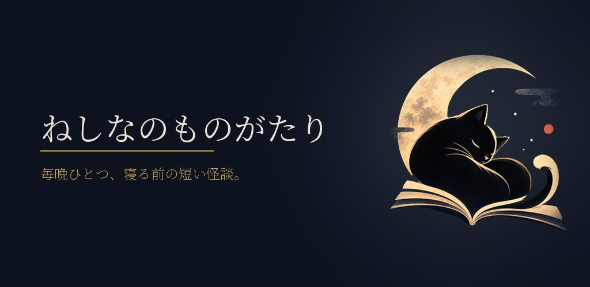
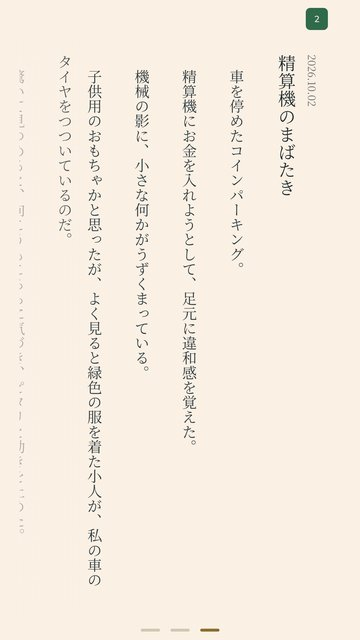
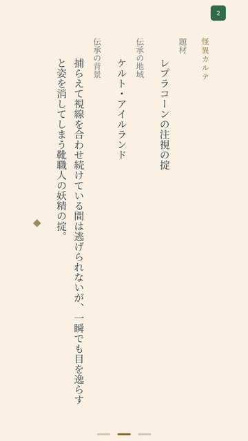
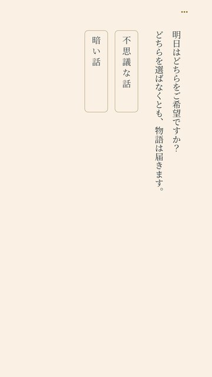
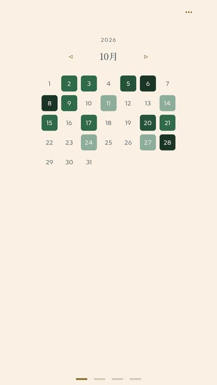

ねしなのものがたり
オープンテスト中（Android）
毎晩22時（日本時間）にホラーと民俗怪談の短編がひとつだけ届く。寝る前に一話だけ静かに読むための Android 向けの読み物アプリです。




アプリのこと
- 本文は縦書きモードでは画面をタップ、横書きモードでは画面をスワイプして読み進めます。BGM や効果音はありません。
- 毎晩22時に新しい物語が届きます。読まなかった物語はそのとき読めなくなります。
- 物語のあとには元になった伝承や怪異を短く紹介する「怪異カルテ」が付いています。
- 話の最後に「明日の雰囲気」をふたつの中から選べます。選ばなくても物語は届きます。選んだ結果は匿名で集計されます。
- 読んだ日はカレンダーに赤い印が付きます。赤い印をタップすると読んだ物語を何度でも読み返せます。
お願いしたいこと
いまは、Google Play のオープンテストとして公開しています。どなたでも参加できます。ぜひ、寝る前の1話を試してみてください。
- 無理のない範囲で毎晩1話読んでみてください。
- 読みにくい・動かない・通知が来ないなどがあれば教えてください（任意）。
参加の手順
- 下のボタンから、Google Play のページを開いてください（Android のスマートフォンで開くと、そのまま進めます）。
- ページにある参加のボタンを押して、オープンテストに参加してください。
- 案内に従って、Google Play からアプリをインストールしてください。
オープンテスト版をインストールするボタンを押すと Google Play のページが開きます。参加も、いつ抜けても自由です。
Android 専用です（7以降）。テスト版なので、動きが不安定なことがあるかもしれません。
やめたいとき
アプリの利用を終了したい場合は、削除（アンインストール）してください。
クローズドテストに参加された方へ
アプリを更新すると、それまでの情報を引き継いだまま、最新版（オープンテスト版）になります。更新が出ないときは、上の手順で Google Play のページからオープンテストに参加してください。
また、クローズドテスト登録時にお預かりしたメールアドレスは、オープンテスト版の配信とともに破棄いたしますのでご安心ください。
くわしくはプライバシーポリシーをご覧ください。
ご注意
- 少し不気味な話です。そうした雰囲気が苦手な方は無理をせず見送ってください。
- 物語は生成 AI を使って作ったフィクションです。ただしテスト期間中は一部の仕様が変わっています。物語の内容は、実在の人物・団体・事件とは関係ありません。
- スマートフォンでの利用（縦持ち）を想定しています。タブレットや折りたたみ端末では、画面が横向きに回って見え方や操作が整っていないことがあります。
- テスト版なので、動きが不安定なことがあるかもしれません。
- 通知を許可すると毎晩22時に新しい話の知らせが届きます。設定でいつでも止められます。
- 集めるのは通知のための識別情報と匿名の集計だけです。
くわしくはプライバシーポリシーをご覧ください。
連絡先
この告知を見つけたSNSへのDM、または連絡先のページからご連絡ください。